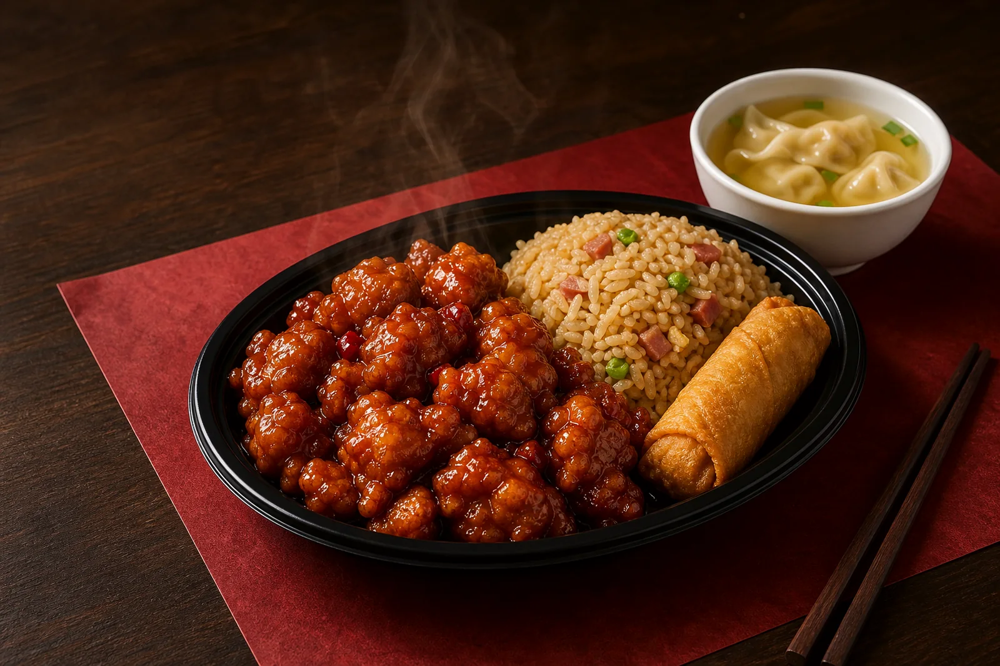
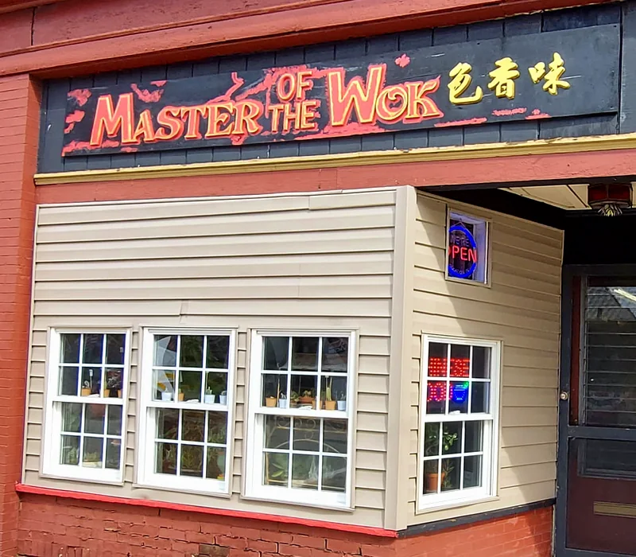
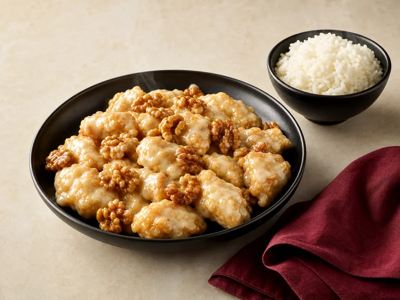

General Tso's Chicken
Deep-fried chicken with a spicy chef's sauce.

Scottdale · Chinese takeout · 2026 menu
Classic combinations, chef specialties and family favourites from a local Pittsburgh Street kitchen.
A Scottdale favourite
Choose a quick lunch, a complete combination plate or one of the house specialties. Every route through the menu leads to a hot, generous meal.

From the wok

Business hours
Call ahead for takeout. Light dinner portions are available between 3pm and 5pm.
214 Pittsburgh Street
Scottdale, PA 15683
Pick up on Pittsburgh Street
Find Master of the Wok in central Scottdale. Dine in or take your order home; the official menu notes that checks and credit cards are not accepted.